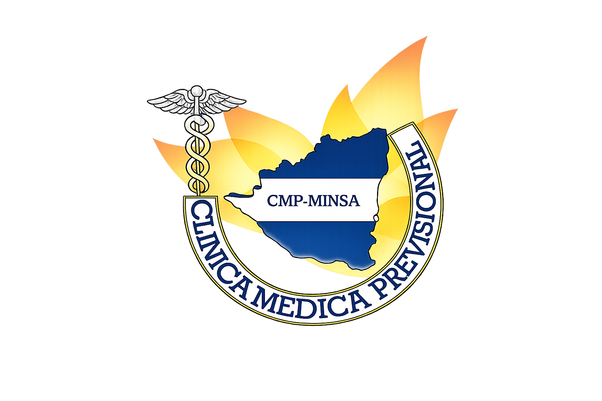

CMP - SEDE CENTRAL
Ministerio de Salud · Managua, Nicaragua
- Inicio
- Especialidades
- Filiales
- Sede Central: Managua
- Hospital Solidaridad: Managua
- Rivas: Gaspar García Laviana
- Ocotal / Jalapa: Modesto Agurcia
- Chinandega: Germán Pomares Ordóñez
- Puerto Cabezas: Daniel Rossman Tejada
- Granada: Pedro Arauz Palacios
- Chontales: Pablo Úbeda - Juigalpa
- Río San Juan: Laureano Mairena
- Estelí: Emilio Flores Obregón
- Bluefields: María J. González Rivas
- Diriamba: Silvio González Mena
- Jinotega: Blanca Arauz Pineda
- Las Minas: Marco I. Arauz Mendoza
- Boaco: Mauricio Duarte Álvarez
- Somoto: José Santos López
- Consultas
- Horarios
- Contacto